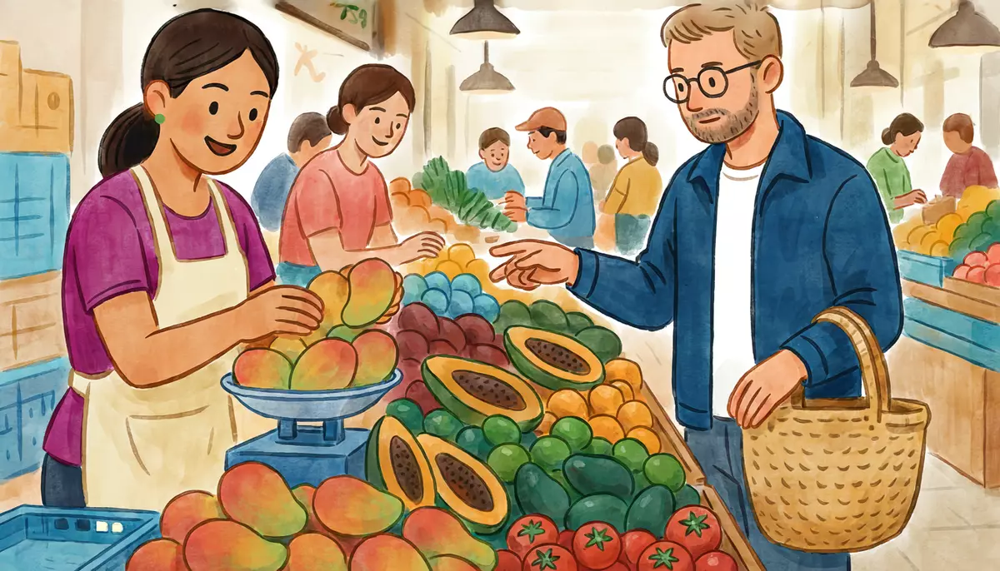

I can buy something at a market or shop: numbers, prices and quantities.Goal of this lesson · CEFR Obtaining goods and services A1
Paso 1 de 8
EscuchaListen
Listen to the conversation, then answer the questions.

Saturday morning at the Mercado de Medellín, a covered market near Narvarte. Alex buys fruit for the week at a stall. usted (customer and stall-holder)
First listen without the text. Press Escuchar todo and answer the first question. Then show the Spanish text and listen again.
ChooseHow much does Alex pay in the end?
Your answer:
M
La marchanta¡Pásele, güero! ¿Qué le damos?Come on in, blondie! What can I get you?
A
AlexBuenos días. ¿A cómo está el mango?Good morning. How much are the mangoes?
M
La marchantaEl mango está a cuarenta pesos el kilo. Está bien dulce, ¿eh?Mangoes are forty pesos a kilo. They're really sweet, you know.
A
Alex¿Me da un kilo, por favor?Can I have a kilo, please?
M
La marchantaClaro. ¿Algo más?Sure. Anything else?
A
AlexSí. ¿Cuánto cuestan estos aguacates?Yes. How much are these avocados?
M
La marchantaSesenta el kilo. ¿Para cuándo los quiere? ¿Para hoy?Sixty a kilo. When do you want them for? For today?
A
AlexSí, para hoy.Yes, for today.
M
La marchantaEntonces llévese estos, ya están maduros. ¿Medio kilo?Then take these ones, they're already ripe. Half a kilo?
A
AlexSí, medio kilo. Y también necesito limones: un cuarto, por favor.Yes, half a kilo. And I also need limes: a quarter of a kilo, please.
M
La marchantaMuy bien. Son cuarenta del mango, treinta del aguacate y diez de los limones: ochenta pesos.Very good. That's forty for the mangoes, thirty for the avocados and ten for the limes: eighty pesos.
A
AlexAquí tiene: cien pesos.Here you are: a hundred pesos.
M
La marchantaY veinte de cambio. Tome, le pongo su pilón: un mango más. ¡Gracias, güero!And twenty change. Here, I'll throw in a little extra: one more mango. Thanks, blondie!
A
Alex¡Muchas gracias! Hasta luego.Thank you very much! Bye.
1
ChooseListen again and answer.
How much is a kilo of avocados?
Why does the vendor choose the avocados for Alex?
What is the pilón?
Paso 2 de 8
FíjateNotice
Read how it works. Play the examples and repeat them aloud.
Asking the price
¿Cuánto cuesta…? for one thing, ¿Cuánto cuestan…? for more than one: ¿Cuánto cuesta el mango? ¿Cuánto cuestan los aguacates? At markets, Mexicans often ask ¿A cómo está…? / ¿A cómo están…? ("at how much is it?"), and the answer is está a cuarenta (pesos) el kilo. To give the total: Son ochenta pesos.
From the conversation:
Buenos días. ¿A cómo está el mango?Good morning. How much are the mangoes?
El mango está a cuarenta pesos el kilo. Está bien dulce, ¿eh?Mangoes are forty pesos a kilo. They're really sweet, you know.
Sí. ¿Cuánto cuestan estos aguacates?Yes. How much are these avocados?
Numbers 100–1,000
Cien is exactly 100; from 101 it's ciento: ciento uno, ciento cincuenta. The hundreds agree with feminine nouns (doscientas personas) but prices in pesos are masculine: doscientos pesos. Watch the irregular ones: quinientos (500), setecientos (700), novecientos (900). 1,000 is mil (no un).
Y only goes between the tens and the units, never after the hundreds: ciento veinte (120), ciento treinta y cinco (135), doscientos cinco (205).
Este, esta, estos, estas: this, these
Point at things with demonstratives, which agree with the noun. Este / esta = this (near me); ese / esa = that (near you). Plurals: estos, estas, esos, esas.
masculine
feminine
this / these
este mango, estos mangos
esta papaya, estas papayas
that / those
ese mango, esos mangos
esa papaya, esas papayas
From the conversation:
Entonces llévese estos, ya están maduros. ¿Medio kilo?Then take these ones, they're already ripe. Half a kilo?
How much? Quantities, and necesito
Fruit and vegetables are sold by weight: un kilo de, medio kilo de (half), un cuarto (de kilo) (a quarter); eggs also by the docena (dozen); tortillas by the kilo or medio kilo. To ask for something: ¿Me da un kilo, por favor? To say what you need: necesito + a thing (necesito limones) or + a verb (necesito comprar fruta).
From the conversation:
Sí, medio kilo. Y también necesito limones: un cuarto, por favor.Yes, half a kilo. And I also need limes: a quarter of a kilo, please.
¿Me da un kilo, por favor?Can I have a kilo, please?
In Mexico, a limón is a small green lime; yellow lemons are less common. Jitomate is the red tomato; in central Mexico tomate usually means the green tomatillo.
Paso 3 de 8
PracticaPractice
Do the exercises in order. They get freer as you go.
1
Listen and chooseListen to the prices. How much is it?
Listen.
Show what they say
La marchanta: La papaya está a treinta y cinco pesos el kilo.
Listen.
Show what they say
Don Chuy: Son ciento veinte pesos, joven.
Listen.
Show what they say
Un vendedor: Esos tenis cuestan quinientos cincuenta.
Listen.
Show what they say
Una vendedora: La bolsa cuesta setecientos noventa y nueve.
2
ChooseCuesta or cuestan? Este, esta, estos or estas?
¿Cuánto ___ el kilo de jitomate?
¿Cuánto ___ las manzanas?
¿Me da ___ papaya, por favor?
___ aguacates están muy maduros.
3
Type the missing wordsWrite the price in words.
$150: pesos
$200: pesos
$575: pesos
$1,000: pesos
$345: pesos
4
Put the words in orderPut the words in order.
How much are the avocados?
Can I have half a kilo of limes?
I need to buy fruit for the week.
5
Say it in SpanishNow you. Say it in Spanish (or type it).
Ask how much the mangoes are (market style).
¿A cómo está el mango?
Ask for a kilo of tomatoes, please.
¿Me da un kilo de jitomate, por favor?
Ask how much these avocados cost.
¿Cuánto cuestan estos aguacates?
Say you also need limes.
También necesito limones.
The vendor asks ¿Algo más? Say: nothing else, thank you.
Nada más, gracias.
6
Your own sentencesYour shopping.
Write a short conversation at a market stall (5–6 lines): ask a price, ask for two things with quantities, and pay.
Show a model answer
Tú: Buenos días. ¿A cómo están las manzanas?
Vendedor: A cincuenta el kilo.
Tú: ¿Me da medio kilo, por favor? Y también necesito un kilo de jitomate.
Vendedor: Son cincuenta y tres pesos.
Tú: Aquí tiene. Gracias.
Check your answer:
Paso 4 de 8
PalabrasWords
Listen to each word and repeat it. Then do the quick check.
This is the price board at Doña Carmen's stall. Read it and answer the questions.
Price board at a market stall
Frutas y Verduras «Doña Carmen» · Precios de hoy
Fruta (el kilo)
Mango Ataúlfo
$40
Papaya maradol
$32
Plátano
$24
Aguacate Hass
$60
Verdura (el kilo)
Jitomate
$28
Cebolla blanca
$26
Papa
$30
Nopales (limpios)
$45
Otros
Huevo (la docena)
$42
Limón (el cuarto)
$10
Aceptamos tarjetaWe take cardsa partir defrom $200. ¡Pregunte por las ofertasspecial offers!
Words with a dotted underline have a translation: tap or hover.
1
ChooseAnswer the questions about the text.
What is cheapest per kilo?
How much do a dozen eggs cost?
Can you pay by card?
Half a kilo of avocados and a kilo of tomatoes cost…
Paso 6 de 8
CulturaCulture
Read about the culture behind the language.
Mercados, tianguis and the pilón
Most Mexico City neighborhoods have a covered mercado nearby, and many streets host a tianguis one day a week: a street market under pink and blue awnings that sets up at dawn and disappears by evening. The word comes from Nahuatl tianquiztli, market. Prices are usually fixed by the kilo; friendly haggling happens, but mostly the reward for being a regular is a better choice of fruit and a pilón, a small free extra.
Regular customers and vendors call each other marchante or marchanta. Vendors also call out güero / güera (light-skinned or fair-haired), joven, seño or jefe: friendly hooks, not personal remarks. A good habit: ask ¿Para cuándo? about avocados and mangoes, and the vendor will choose ones ripe for that day.
Prices are in Mexican pesos, written with the $ sign. Banknotes come in 20, 50, 100, 200, 500 and 1,000 pesos; small market stalls prefer coins and small bills, so keep some cambio.
Elsewhere: Covered markets are the heart of cities across the Spanish-speaking world: La Boquería in Barcelona (Spain), the Mercado Central in Santiago de Chile, Paloquemao in Bogotá. Fruit names change too: the avocado is palta in Chile, Argentina and Peru.
Sources
Banco de México: banknotes in circulation (20, 50, 100, 200, 500 and 1,000 pesos).
Gran Diccionario Náhuatl (UNAM): tianquiztli.
1
ChooseCheck: what did you learn?
What is a tianguis?
Paso 7 de 8
Tu turnoYour turn
Now use it: do the role play, then write.
Role play: Shopping at the market
You're at a fruit and vegetable stall in a Mexico City market. You have 200 pesos. Buy fruit for the week and something for guacamole. Use usted.
You
Greet the vendor.
Ask the price of two things (¿A cómo está…?).
Ask for quantities (un kilo, medio kilo…).
Say what else you need.
Ask for the total, pay and check your change.
La marchanta
Greets you: ¿Qué le damos?
Gives prices per kilo.
Asks ¿Algo más? and ¿Para cuándo? for the avocados.
Tells you the total and gives change.
Adds a pilón.
1. Listen to a model
One way the conversation could go. Listen, then try it yourself without looking.
M
La marchanta¡Buenos días! ¿Qué le damos?Good morning! What can I get you?
A
AlexBuenos días. ¿A cómo está la papaya?Good morning. How much is the papaya?
M
La marchantaA treinta y dos el kilo.Thirty-two a kilo.
A
Alex¿Me da un kilo, por favor? Y necesito aguacates para hoy.Can I have a kilo, please? And I need avocados for today.
M
La marchantaEstos están maduros. ¿Cuánto le doy?These ones are ripe. How much shall I give you?
A
AlexMedio kilo. Y un kilo de jitomate, por favor. ¿Cuánto es?Half a kilo. And a kilo of tomatoes, please. How much is it?
M
La marchantaSon noventa pesos.That's ninety pesos.
A
AlexAquí tiene: doscientos.Here you are: two hundred.
M
La marchantaCiento diez de cambio. ¡Gracias, marchante!A hundred and ten change. Thanks, my friend!
2. Record yourself
Say your part aloud (pause the model after each of La marchanta's lines), or answer the questions in the role card. Then play it back and compare.
3. Practice with an AI partner (optional)
Copy this prompt into ChatGPT or Claude, switch on voice mode, and have the conversation. It plays La marchanta.
Stuck? Say «ayuda» and it gives you a hint in English, then carries on.
Finished? Say «terminamos» and it gives you feedback in English: what you did well, your mistakes, and useful phrases for next time.
Let's practice Spanish (Mexican Spanish, level A1). You are a friendly market vendor, a woman about 30, at a fruit and vegetable stall in a Mexico City market. Use "usted" and call me "güero/güera" or "marchante".
Prices per kilo: mango 40, papaya 32, banana 24, avocado 60, tomato (jitomate) 28, onion 26, lime 40 (a quarter kilo is 10). Eggs 42 a dozen. I have 200 pesos.
Rules:
- Speak only Spanish, short turns (1-2 sentences), simple language for an A1 learner. Speak slowly and use very common words.
- Greet me ("¿Qué le damos?"), tell me prices when I ask, ask "¿Algo más?" after each item, and ask "¿Para cuándo?" if I buy avocados. At the end, tell me the total and my change. Use simple A1 Spanish.
- You play only this one person. Never speak as anyone else, and don't describe what other people say or do.
- If I make a mistake, don't stop me: repeat what I said correctly in your answer (for example: if I say "¿Cuánto cuesta los mangos?", you say "¿Los mangos? Cuestan cuarenta el kilo.").
- Make one small mistake with my change, so I have to say the right amount.
- When I say "ayuda", step out of the role play for a moment: in English, give me a short hint about what I could say next, with one or two short Spanish options, then continue the role play where we were.
- When I say "terminamos", stop the role play and give me feedback in English: 3 things I did well, up to 3 mistakes with corrections, and 3 useful phrases for next time.
Start now: say "¡Pásele, pásele! ¿Qué le damos?"
Writing: A message about the shopping
Doña Lupita asked you to buy things at the market. Write her a message: what you bought, how much of each, the prices, and the total.
30–60 words.
Show a model answer
Doña Lupita: ya tengo todo. Tengo un kilo de jitomate (veintiocho pesos), medio kilo de cebolla (trece pesos) y una docena de huevos (cuarenta y dos pesos). Son ochenta y tres pesos en total. ¡Ah! La marchanta es muy amable, ¡y con un limón de pilón! ¡Nos vemos al rato!
Check your text:
Paso 8 de 8
¿Lo logré?Did I do it?
Check yourself against the goal of the lesson.
Read each statement and be honest: anything marked casi or todavía no goes into Repaso so it comes back soon.
I can ask how much things cost, with cuesta / cuestan and ¿A cómo está?
I can understand prices up to 1,000.
I can ask for quantities: un kilo, medio kilo, una docena…
I can point at things with este, esta, estos, estas.